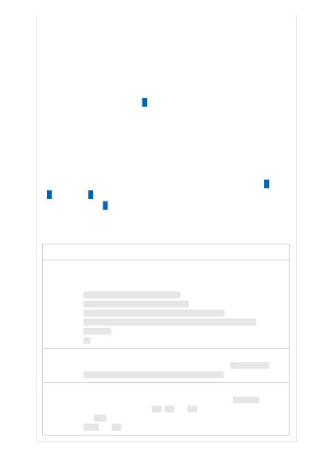

use data from prior observations to predict the most probable next word. This
process is then repeated by appending the newly generated content to the original
text to produce the complete generated response. Because the response is
conditioned on the input text, these models can be applied to various tasks simply
by changing the input text.
The GPT-3 series of models are pretrained on a wide body of publicly available free
text data. This data is sourced from a combination of web crawling (specifically, a
filtered version of Common Crawl , which includes a broad range of text from the
internet and comprises 60 percent of the weighted pretraining dataset) and higher-
quality datasets, including an expanded version of the WebText dataset, two
internet-based books corpora and English-language Wikipedia. The GPT-4 base
model was trained using publicly available data (such as internet data) and data
that was licensed by OpenAI. The model was fine-tuned using reinforcement
learning with human feedback (RLHF).
Learn more about the training and modeling techniques in OpenAI's GPT-3 , GPT-
4 , and Codex research papers. The guidance below is also drawn from OpenAI's
Term
Definition
Prompt
The text you send to the service in the API call. This text is then input into the
model. For example, one might input the following prompt:
Convert the questions to a command:
Q: Ask Constance if we need some bread
A: send-msg 'find constance' Do we need some bread?
Q: Send a message to Greg to figure out if things are ready for
Wednesday.
A:
Completion
or
Generation
The text Azure OpenAI outputs in response. For example, the service may
respond with the following answer to the above prompt: send-msg 'find
greg' figure out if things are ready for Wednesday.
Token
Azure OpenAI processes text by breaking it down into tokens. Tokens can be
words or just chunks of characters. For example, the word hamburger gets
broken up into the tokens ham , bur and ger , while a short and common word
like pear is a single token. Many tokens start with a whitespace, for example
hello
and bye .
Key terms